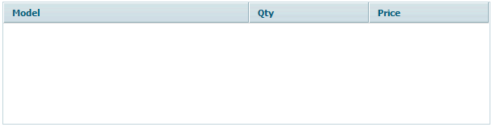
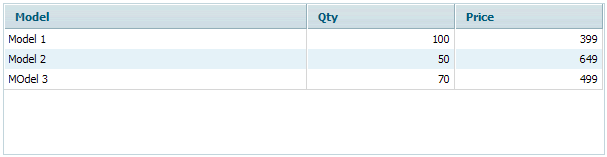
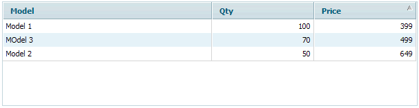
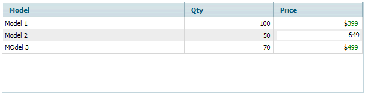

When
I started writing this tutorial, I called dhtmlxGrid "the best grid you've
ever seen". But this was too arrogant. It doesn't really matter what I
think about it. More important what will you think about it at the end. So, one
of the purposes of these set of articles united by common title
"dhtmlxGrid. Step-by-step Guide" is to pass you my feeling of
dhtmlxGrid, as very useful and powerful ajax grid component... and make you believe that it is SIMPLE, FAST and FLEXIBLE.
First of all, I'm going to show you how to do things, then you'll experiment.
In this article I'll show the following:
First of all let's place files we need for grid: dhtmlxcommon.js - file includes common objects shared by all dhtmlx components like AJAX request processors, error handlers, various tools and parsers used by the components, dhtmlxgrid.js - the main grid engine and API, dhtmlxgridcell.js - grid cells engine and default cells.
And styles: dhtmlxgrid.css - the main grid styles file, it also contains various predefine skins related styles.
<link rel="STYLESHEET" type="text/css" href="codebase/dhtmlxgrid.css">
<script src="codebase/dhtmlxcommon.js"></script>
<script src="codebase/dhtmlxgrid.js"></script>
<script src="codebase/dhtmlxgridcell.js"></script>
<script>
//we'll write script commands here
</script>
While you are working with dhtmlxGrid, you'll need to include more files from the library as soon as you require more functionality. I'll tell you about some popular extensions in next chapters of this step-by-step tutorial.
There are two ways to place grid on the page, but as the main goal of this article is to show you the simplicity of dhtmlx components' usage, I'll go the most common way. So I need to place DIV on my page and set ID attribute to some unique value. Also I'll specify the grid's width and height right in the style attribute of the DIV.
<div id="mygrid_container" style="width:600px;height:150px;"></div>
Now I proceed to the main phase of the process - defining the grid parameters. So in the script block (remember? I left it empty right after external javascript files inclusions) I write the following:
var mygrid;
function doInitGrid(){
}
doInitGrid function will contain grid initialization code (not so much code I would say):
mygrid = new dhtmlXGridObject('mygrid_container');
mygrid.setImagePath("codebase/imgs/");
mygrid.setHeader("Model,Qty,Price");
mygrid.setInitWidths("*,150,150");
mygrid.setColAlign("left,right,right");
mygrid.setSkin("light");
mygrid.init();
Now we need to run this function. It is important to run it after DIV element that we would use for grid iniialization was loaded. So I could place this function call in the script block right after the mentioned DIV, but I prefer to use onload event of the "body: element for this. So my "body" tag will look like this:
<body onload="doInitGrid();">
If you run the page now it should look like this:
As you probably already know dhtmlxGrid can load data from XML, CSV (text file where values separated by some character like comma or any other). It also can be populated with javascript methods. In this article I'll describe loading from XML. By the way, loading data from XML doesn't mean that you can't load data from the database. You'll see this later in the article.
XML structure understandable for dhtmlxGrid.
To populate grid from XML you need the data to be structured in the way grid can understand. This is easy as the structure is intuitively clear. Generally it consists of rows with the cells inside. Each row should have a unique identifier (This is important as grid should be able to distinguish one row from another). Cells values are inside cell tags. To work with our sample we need each row to have 3 cells inside it (as soon as we set 3 columns in grid):
<?xml version="1.0" encoding="UTF-8"?>
<rows>
<row id="a">
<cell>Model 1</cell>
<cell>100</cell>
<cell>399</cell>
</row>
<row id="b">
<cell>Model 2</cell>
<cell>50</cell>
<cell>649</cell>
</row>
<row id="c">
<cell>MOdel 3</cell>
<cell>70</cell>
<cell>499</cell>
</row>
</rows>
Let's save this xml into a file with the name "step3.xml" and place this file into the same folder where we have index.html file and where we implement the grid. You need the only one command to be added to your doInitGrid function which is mygrid.loadXML("step3.xml");. Put it after mygrid.init();
mygrid.loadXML("step3.xml");
If you run the page now it should look like this:
Grid still looks rather simple and has just a few rows of data. In real life people use grids to show much more data in hundreds, thousands or sometimes millions of rows. This is also possible with dhtmlxGrid. But for now three rows is enough.
To enable sorting of rows on the client side ("client side" means that grid will do this in your browser without using any help from the server) you need to define sorting type for each column in grid using mygrid.setColSorting(sortTypesStr); method, where sortTypesStr is a list of types. There are four types available plus "na" - which means that sorting is not available for the column:
mygrid.setColSorting("str,int,int");
Now you can click on the column header and sort the rows in grid according to the sorting types you've just specified. You can find out about "custom sorting" here.
If you run the page now and click on the last column header grid should look like this:
Cell Editiors (or eXcells - Extended Cells, Cell or Columns types) are used in grid to define the value formating and the way of editing. There are some predefined eXcells, delivered with the package (complete list is avalable here). Also there are some eXcells created by other developers. You also can create eXcells which will exactly suite your needs.
Setting cell types is easy - it can be done using one line of code. First of all, all eXcells have their own codes. These codes should be used while setting cell types. For example, a simple editor has the code "ed", an editor with popup multiline editing area - "txt", a readonly cell - "ro", a checkbox - "ch", a price formatted cell - "price". In the Standard Edition of grid there is a possibility to set types on columns. In the Professional edition you can set type either on a column or on each cell.
Let's add types to our grid. By default all columns has "ro" type. Some types can be assigned to any values, but some, like "price", for example, should be assigned to the cells with proper - numeric - values. Otherwise the value will be omitted or incorrectly parsed. Taking this into account, let's set the first column as editable with a simple editor ("ed"), assign a simple editor ("ed") on the second one too and price formating with editing capabilities ("price") on the last column. The line of code you need to add before mygrid.init() is the following:
mygrid.setColTypes("ed,ed,price");
Now you can enter editors by a double click on an editable cell, or pressing F2. If you use tab key to navigate from one cell to another, then editor will be opened automatically for the cell which is in focus.
If you run the page now and double click on a cell in the third column it should look like this:
Here I would say some words about adding rows into grid and removing rows with the help of Script API (set of methods which help you manage grid through JavaScript). First of all we'll need to add two buttons to the page: "Add Row" and "Remove Row". Do this by adding the following HTML code to the body of your page right after grid:
<button onclick="addRow()">Add Row</button> <button onclick="removeRow()">Remove Row</button>
Most important things here are two function calls, which occure when you click the first or the second button: addRow() and removeRow() respectively. Let's add these function to the script block where you already have doInitGrid() function. The code you need to add is the following:
function addRow(){
var newId = (new Date()).valueOf()
mygrid.addRow(newId,"",mygrid.getRowsNum())
mygrid.selectRow(mygrid.getRowIndex(newId),false,false,true);
}
function removeRow(){
var selId = mygrid.getSelectedId()
mygrid.deleteRow(selId);
}
Some comments about addRow() function code (line by line):
Some comments about removeRow() function code (line by line):
Like with any other component you need to have the ability to set your own reaction on some user action. For example, you need something to be done when a user clicks on a row in grid. dhtmlxGrid provides this possibility together with impressive list of events.
The way of setting event handler is common for all events. Just call attachEvent method of the grid object with the event name as the first argument and the event handler function as the second argument. Depending on the event, an event handler will get various number of incoming parameters. For example, onRowSelect event handler will get 2 incoming parameters: row ID and cell index where user clicked to the select row:
function doOnRowSelected(rowID,celInd){
alert("Selected row ID is "+rowID+"\nUser clicked cell with index "+celInd);}
mygrid.attachEvent("onRowSelect",doOnRowSelected);
Here is what we get at the end:
<title>dhtmlxGrid Sample Page</title>Download related files
<link rel="STYLESHEET" type="text/css" href="codebase/dhtmlxgrid.css">
<script src="codebase/dhtmlxcommon.js"></script>
<script src="codebase/dhtmlxgrid.js"></script>
<script src="codebase/dhtmlxgridcell.js"></script>
<script>
var mygrid;
function doInitGrid(){
mygrid = new dhtmlXGridObject('mygrid_container');
mygrid.setImagePath("codebase/imgs/");
mygrid.setHeader("Model,Qty,Price");
mygrid.setInitWidths("*,150,150");
mygrid.setColAlign("left,right,right")
mygrid.setSkin("light");
mygrid.setColSorting("str,int,int");
mygrid.setColTypes("ed,ed,price");
mygrid.attachEvent("onRowSelect",doOnRowSelected);
mygrid.init();
mygrid.loadXML("step3.xml");
}
function addRow(){
var newId = (new Date()).valueOf()
mygrid.addRow(newId,"",mygrid.getRowsNum())
mygrid.selectRow(mygrid.getRowIndex(newId),false,false,true);
}
function removeRow(){
var selId = mygrid.getSelectedId()
mygrid.deleteRow(selId);
}
function doOnRowSelected(rowID,celInd){
alert("Selected row ID is "+rowID+"\nUser clicked cell with index "+celInd);
}
</script>
<body onload="doInitGrid()">
<div id="mygrid_container" style="width:600px;height:150px;"></div>
</body>